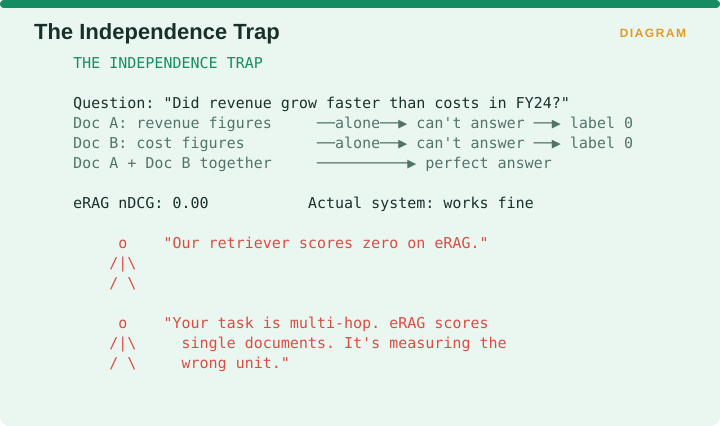
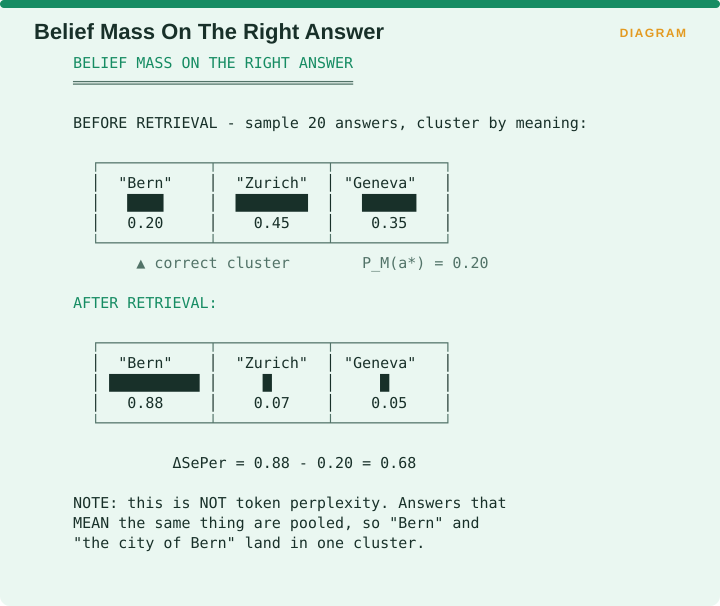
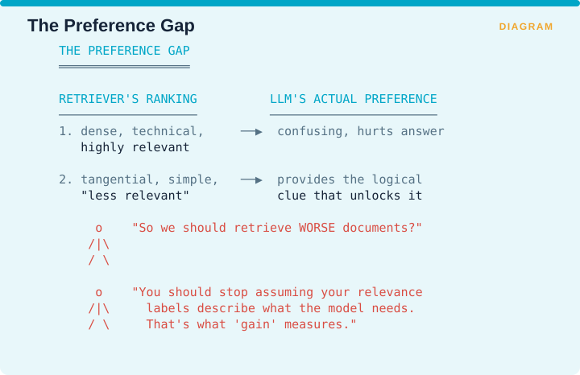
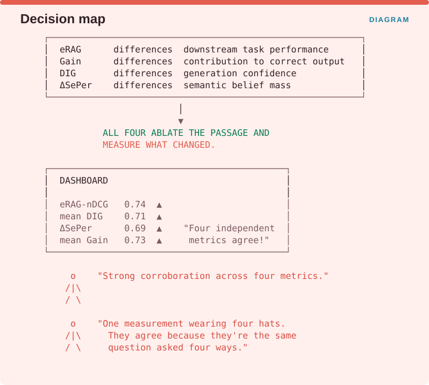

Measuring Retrieval › A.2 Family 1 - The Contribution Metrics
A.2 Family 1 - The Contribution Metrics
A.2.1 eRAG - document-level downstream utility
One-line: Feed each retrieved document to the LLM individually, score the resulting output against the task’s ground truth, and use that score as the document’s relevance label.
Facets: Alignment | passage | ref | E2E | ESTABLISHED VERIFIED Source: Salemi & Zamani, SIGIR’24 · arXiv:2404.13781
The problem it solves
Relevance labels come from people, and people judge whether a document is about the right topic. What a RAG system needs to know is whether a language model can actually produce a correct answer from that document, which is a different question. The paper’s motivating observation is blunt: evaluating a retriever using query-document relevance labels shows only a small correlation with the RAG system’s downstream performance. The field had been assuming human relevance and machine usefulness were the same quantity, and they are not.
The idea
eRAG stops asking people what is relevant and starts asking the generator. Each document in the retrieval list is run through the language model on its own, the resulting output is scored against the downstream ground truth, and that score becomes the document’s label. You then aggregate those per-document labels using any ordinary set-based or ranking metric you already report, whether that is precision, nDCG or anything else.
That last property is the elegant part, and it is easy to miss. eRAG is not a replacement for nDCG. It is a replacement for the relevance labels you feed into nDCG.

The figure contrasts the two pipelines. Classically, a human looks at document 3, decides it is relevant because it is about the right topic, and that label goes into nDCG. Under eRAG, document 3 goes to the language model alone, the model produces an answer, the answer is scored against the truth, and that score becomes the label that goes into nDCG. The question being asked has changed from whether the document is on topic to whether the model could actually answer using only this. Same formula, completely different input.
Reported results
Kendall’s τ correlation with downstream RAG performance improves by between 0.168 and 0.494 over baseline methods. Runtime improves, and GPU memory consumption drops by up to 50 times relative to full end-to-end evaluation.
That 50 times is not a footnote, it is the reason eRAG is deployable at all. Evaluating every possible subset of retrieved documents end to end is combinatorially hopeless, and eRAG’s per-document decomposition turns the problem linear.
Advantages
- Directly targets the thing you care about, since the label is downstream performance rather than a proxy for it.
- Drops into your existing metric stack, because it produces labels, so nDCG, MAP and P@K all continue to work unchanged.
- Dramatically cheaper than true end-to-end evaluation, and the 50-fold memory reduction is what makes it viable inside continuous integration.
- Component-agnostic in the right way. Swap the retriever and the labels remain valid. Swap the generator and they correctly become invalid, which is the behaviour you want.
Disadvantages
- Requires downstream ground-truth labels, so this is reference-based and unavailable to you if you have no golden answers.
- Independence assumption. Each document is scored alone, so a document that only becomes essential in combination with another scores zero. For multi-hop tasks this is a material blind spot, and it is exactly the gap SURE-RAG identifies when it argues that missing reasoning steps cannot be detected by scoring passages independently.
- Generator-bound. The labels are only valid for the generator that produced them, so changing the model means relabelling everything.
- Cost is linear in k rather than free, since it is one model call per retrieved document per query.
Domain examples
Enterprise knowledge base with FAQ-like questions. A near-ideal fit, because most questions are answerable from a single chunk, so the independence assumption holds. Use eRAG labels to retrain your reranker and you are optimizing that reranker for the generator you actually deploy.
Financial multi-document analysis. A poor fit as the sole metric. A question like “what was the revenue change across the three segments?” needs three documents jointly, each of which scores near zero alone, so eRAG will report your retriever as failing when it succeeded. Pair it with a set-level sufficiency measure.
Medical guideline extraction. Mixed. RAG-X’s GuidelineQA work suggests these questions are often answerable from a single source, and the multi-source cases produce silent failures with clinical consequences. Sample the documents that received a zero label and audit them by hand before trusting the aggregate.
Recommendation
Use eRAG to generate labels, compute nDCG on those labels, and report the result alongside nDCG computed on human labels. The gap between the two numbers is your relevance-utility divergence, and it is one of the most informative single figures you can put on a RAG dashboard.
If your task is multi-hop, do not use eRAG on its own. Its independence assumption is not a small approximation in that setting, it is a structural mismatch with the task.
Failure mode

The figure works the case. The question is whether revenue grew faster than costs in FY24. Document A holds the revenue figures and cannot answer the question alone, so it gets a label of 0. Document B holds the cost figures and cannot answer alone either, so it also gets 0. Together they answer the question perfectly. eRAG-derived nDCG comes out at 0.00 while the actual system works fine.
A retriever scoring zero on eRAG in this situation has not failed. The task is multi-hop, eRAG scores single documents, and it is measuring the wrong unit.
A.2.2 DIG - Document Information Gain
One-line: A document’s value is the difference in the LLM’s generation confidence with and without that document in the context.
Facets: Alignment | passage | free | E2E | EMERGING VERIFIED Source: Wang et al., EMNLP’25 Oral · arXiv:2509.12765
The problem it solves
eRAG needs golden answers, and most production traffic does not come with them. If you want to know which retrieved documents are pulling their weight on live queries nobody has labelled, you need a signal the model can produce about itself. As the paper frames it, current RAG frameworks struggle to identify whether retrieved documents meaningfully contribute to answer generation, which makes it hard to filter out irrelevant or misleading content.
The idea
DIG measures a document’s value as the change in the model’s confidence in its own answer when that document is added to the context. Then, and this is where it departs from eRAG, those DIG scores are used to train a specialized reranker that filters out irrelevant documents and promotes valuable ones.

The figure works a small example. Without the document, the model answers “I think it’s… Bern?” with a confidence of 0.41. With the document, it answers “It’s Bern” with a confidence of 0.93. DIG is 0.93 minus 0.41, which is 0.52.
It is tempting to read a high DIG as meaning the document helped, and what a high DIG actually means is that the model became more confident. Those two are the same thing only when the model is well calibrated, which is the weakness the failure mode below turns on.
Reported results
On NaturalQA, exact-match accuracy improves by 17.9% over naive RAG, 4.5% over self-reflective RAG, and 12.5% over modern ranking-based RAG, with an average 15.3% increase on GPT-4o across all the datasets tested.
Advantages
- Reference-free, so no golden answers are needed, which is a decisive practical advantage over eRAG and makes DIG viable in continuous integration against unlabelled production traffic.
- Cheap relative to full generation scoring, since confidence is available from the forward pass the model already performed.
- Dual-use, because the same signal serves both as a diagnostic metric and as a training target for a reranker.
- Works with multiple retrievers, with the paper reporting gains under both single-retriever and multiple-retriever setups.
Disadvantages
- Confidence is not correctness, and this is the load-bearing weakness. A document that is confidently wrong, meaning a plausible, on-topic, factually incorrect passage, will raise generation confidence and post a high DIG. The metric cannot distinguish a document that helped the model be right from one that helped it be sure.
- Inherits every calibration pathology of the underlying model. If your generator is overconfident on a topic, DIG is miscalibrated on that topic in the same direction.
- Circular when used as a training target. If you train the reranker on DIG and then report DIG, you are reporting a metric the system was optimized against, so use a held-out generator.
- Carries the same independence assumption as eRAG.
Domain examples
High-volume consumer support. An excellent fit, because being reference-free means you can compute it on live traffic with no annotation, and support answers are typically single-source.
Adversarial or misinformation-adjacent domains. Dangerous. The gap between confidence and correctness is precisely what an adversarial passage exploits, since a well-written false passage is designed to raise confidence. Do not use DIG as a safety metric anywhere the corpus might contain deliberately misleading content.
Legal research. Use with care. Legal text is written to sound authoritative, so gains in confidence are cheap while gains in correctness are not. Pair DIG with a reference-based check on a labelled subset.
Recommendation
Use DIG when you need a reference-free contribution signal, and read it as evidence of influence rather than evidence of quality. A document with a high DIG changed the model’s behaviour, and whether it changed it for the better requires a different metric to establish.
If you use DIG to train a reranker, which is its intended purpose, compute the DIG you report using a different generator from the one used in training.
Failure mode

A retrieved document is well written, on topic and wrong. Without it the model says “I’m not sure, possibly X?” at a confidence of 0.35. With it the model says “It is definitely Y” at a confidence of 0.95. DIG comes out at 0.60, the highest score of any document in the set, and the answer is wrong.
DIG did not rank the worst document first by mistake. It ranked the most persuasive document first, which is what it measures, and it never claimed to rank the most correct one.
A.2.3 ΔSePer - Semantic Perplexity Reduction
One-line: Sample many answers, cluster them by meaning, measure how much probability mass sits on the correct meaning-cluster before and after retrieval; the increase is retrieval’s utility.
Facets: Alignment | query | ref | E2E | EMERGING VERIFIED Source: Dai, Xu, Ye, Liu & Xiong, ICLR’25 Spotlight · arXiv:2503.01478
The problem it solves
Scoring an answer by comparing its text against a reference punishes paraphrase, so a model that says “the city of Bern” when the reference says “Bern” gets marked down for being right in different words. What you want to measure is how much of the model’s belief sits on the correct meaning, regardless of how it happened to word things.
The idea
This is the most mathematically involved metric in the family, and the algorithm is worth stating in full because mangled summaries of it circulate.

The published algorithm takes a model M, a reference answer a*, an entailment model E, a threshold τ and a number of samples N. An entailment model is one that judges whether one piece of text implies another, which is how the method decides that two differently worded answers mean the same thing.
Step 1 samples N responses from the model. Step 2 records the likelihood the model assigned to each one. Step 3 has two variants. In the hard variant, responses are clustered together whenever the entailment score between them reaches the threshold τ, the cluster matching the reference answer is identified, and the probability of the correct answer is the sum of the likelihoods inside that cluster. In the soft variant, each response gets a kernel weight equal to its entailment score against the reference, and the probability is the likelihood-weighted sum of those weights. Step 4 repeats the whole procedure with the retrieved documents included, and step 5 gives ΔSePer as the probability of the correct answer with retrieval minus the probability without it.
Entailment is computed using deberta-v2-xlarge-mnli,
which the authors note is far more efficient than using an API-based
judge without a significant drop in performance.
CAUTION A correction to a widely-circulated summary
A popular paper-summary site states that SePer does not require human annotations or ground truth answers. That is wrong. Algorithm 1 requires a*, the reference answer, at step 3 in both variants, and you cannot identify the correct semantic cluster without knowing what correct means.
This matters operationally, because if you adopted SePer believing it was reference-free, you planned around a false premise. SePer is reference-based, and DIG is the reference-free member of this family.

The rebuttal in the figure is simply to read step 3b, which says to identify the cluster matching the reference answer. Read the algorithm rather than a summary of the algorithm.
How the belief mass moves

The figure runs a concrete case. Before retrieval, twenty sampled answers cluster into three meanings: “Bern” holding 0.20 of the probability mass, “Zurich” holding 0.45 and “Geneva” holding 0.35. The correct cluster is Bern, so the model’s belief in the right answer starts at 0.20. After retrieval, the same clustering gives Bern 0.88, Zurich 0.07 and Geneva 0.05, so ΔSePer is 0.88 minus 0.20, which is 0.68.
The pooling is the actual contribution here, and it is what separates this from token-level perplexity. Answers that mean the same thing land in one cluster, so “Bern” and “the city of Bern” are counted together rather than treated as a disagreement.
Advantages
- Measures belief rather than surface form, which makes it robust to paraphrase in a way that ROUGE, BLEU and exact match are not.
- The strongest human correlation in the family. The paper reports its entailment-based answer scoring achieving the highest accuracy among the evaluators tested and performing on a par with human judgment, validated on the EVOUNA benchmark.
- Two variants for two budgets, with the hard clustering variant cheaper and the soft kernel variant giving a continuous and more nuanced score.
- Isolates retrieval’s contribution from generation quality by construction, since both measurements use the same generator.
Disadvantages
- Reference-based, as the correction above establishes.
- Expensive. It needs N samples per query in each condition, plus an entailment model run over every pair of responses for the hard variant, so this is not a per-commit metric.
- Threshold sensitivity. τ controls the clustering, and setting it loose merges genuinely distinct answers while setting it tight fragments paraphrases of the same answer. The metric moves with τ and τ is rarely reported.
- The entailment model becomes a dependency you own. Swap deberta for something else and your historical numbers stop being comparable, which is a drift problem from Chapter 1’s third dimension hiding inside an alignment metric.
Domain examples
Research evaluation of retrievers. The intended setting and an excellent one, since if you are choosing between three retrievers offline, ΔSePer gives the most faithful ranking of their true utility.
Regulated domains needing paraphrase tolerance. Clinical and legal answers are frequently correct while worded differently, so exact match under-reports badly and semantic clustering fixes it.
Production monitoring. A poor fit, because sampling N answers per query is not something you run against live traffic. Use it on a fixed benchmark set at release cadence.
Recommendation
Use ΔSePer as your offline gold-standard utility measure, meaning the number you trust when choosing a retriever, and use something cheaper such as DIG or eRAG-labelled nDCG for continuous monitoring.
Report N and τ alongside the score every time, because a ΔSePer without its hyperparameters is not reproducible.
Failure mode

Team A uses a tight threshold of τ = 0.90 and reports ΔSePer of 0.31. Team B uses a loose threshold of τ = 0.70 and reports 0.58. Same system, same data, same metric name.
Team B’s retriever is not better. Team B’s clustering is looser, so more responses fall into the correct cluster, and the two teams compared two different metrics that happen to share a name.
A.2.4 Gain (GainRAG) - passage contribution to correct output
One-line: A signal estimating how well an input passage contributes to producing correct output, used to train middleware that aligns retriever and LLM preferences.
Facets: Alignment | passage | free | E2E | EMERGING VERIFIED Source: Jiang, Zhao, Li, Wang & Qin, GainRAG: Preference Alignment in Retrieval-Augmented Generation through Gain Signal Synthesis, ACL 2025 · arXiv:2505.18710
The problem it solves
Every metric so far in this family assumes that a more relevant passage is at worst neutral for the generator. GainRAG’s premise is that this assumption is false, and it is the most interesting claim in this part.
The paper describes a preference gap between retrievers and language models. Some highly relevant passages interfere with the model’s reasoning because they contain complex or contradictory information, and some passages that are only indirectly related help the model reach an accurate answer by supplying a useful clue.
That is worth reading twice. Two independent groups, Jiang et al. here and Cuconasu et al. in The Power of Noise at SIGIR’24, reached the same counterintuitive finding by different routes. Relevance and usefulness are not merely imperfectly correlated. They sometimes point in opposite directions.
The idea

The figure sets the two orderings against each other. The retriever ranks a dense, technical, highly relevant passage first, and that passage confuses the model and makes the answer worse. The retriever ranks a tangential, simple, apparently less relevant passage second, and that one supplies the logical clue that unlocks the question.
The conclusion is not that you should retrieve worse documents. It is that you should stop assuming your relevance labels describe what the model needs, and gain is the signal that measures the difference.
CAUTION The circularity warning
Gain was defined in order to train a middleware component. If you train on gain and then report gain, you are reporting a metric your system was explicitly optimized against, and that number will look excellent while meaning nothing.
If you adopt gain as a metric, compute it using a held-out generator that took no part in the training loop. This warning applies in weaker form to DIG, which is also used as a reranker target, and does not apply to eRAG or ΔSePer, both of which were designed as measurements first.
Advantages
- Names a real and under-appreciated phenomenon. The preference gap is the single most useful concept in this part for reasoning about why a better retriever can make a system worse.
- Actionable by design, since the middleware is the deliverable rather than the number.
- Trainable with limited data, according to the paper’s framing.
Disadvantages
- Circular if reported naively, as set out above.
- Primarily an optimization signal. It was not designed as a reporting metric, and using it as one is off-label.
- The pseudo-passage strategy exists to mitigate degradation, which implies the raw signal has a degradation mode you should understand before deploying it.
Domain examples
Any domain where you control the reranker. This is where gain belongs, as a training signal rather than a dashboard line.
Domains with dense, technical source material. Precisely where the preference gap bites, including legal statutes, clinical guidelines and engineering specifications, because the most relevant passage in those corpora is frequently the least usable one.
Recommendation
Treat gain as a training signal. The method estimates gain signals and then trains a middleware selector that predicts which passages will provide a positive generation gain, which is how it gets past naive relevance and aligns the retriever’s output with what actually benefits the generator. A pseudo-passage strategy mitigates degradation. It was trained on a small subset of HotpotQA and WebQuestions and generalizes across six datasets, with StandardRAG, Self-RAG and BGE-Reranker-base as baselines, all evaluated at top-1.
Its diagnostic value to you is conceptual, which is to internalize the preference gap and stop assuming your relevance ordering describes what the generator needs.
A.2.5 WARG - Weighted Attribution-Relevance Gap
One-line: Measures how well the generator’s actual document usage aligns with the retriever’s ranking, using attribution methods on both sides.
Facets: Alignment | passage | free | E2E | EMERGING VERIFIED Source: Randl, Rocchietti, Henriksson, Abedjan, Lindgren & Pavlopoulos · arXiv:2601.21803
The problem it solves
The contribution metrics tell you what a passage was worth. None of them tells you whether the generator actually paid attention to the passage the retriever ranked first. That is a different question, and answering it requires looking inside both components rather than at their outputs.
The idea
WARG belongs to the attribution family, meaning it computes what each component actually attended to. On the retriever side it uses Integrated Gradients, adapted for retrieval. On the generator side it uses PMCSHAP, a Monte-Carlo-stabilized approximation of Shapley values, which is a technique from game theory for dividing credit among contributors. WARG itself is the gap between those two attributions.
The two failure modes it names

The figure draws both. In wasted retrieval, the retriever ranks document 1 as best, the generator ignores it and uses document 2 instead, so you paid to retrieve the right material and threw it away. In noise distraction, the retriever ranks document 4 as weak and the generator builds its answer primarily on that one, so the answer rests on the weakest evidence in the set.
Reported prevalence
| Failure | Share of queries |
|---|---|
| Generator ignores retriever’s top-ranked document | 47.4 - 66.7% |
| Generator relies primarily on a lower-ranked document | 48.1 - 65.9% |
On domain-specific data the figures came out around 60% and 57%. These are not edge cases. On most queries in the systems studied, the generator is not using the document the retriever worked hardest to find.
Advantages
- Reference-free, so no golden answers are required.
- Mathematically grounded in established attribution theory, namely Integrated Gradients and Shapley values.
- Produces named, actionable failure modes rather than a single opaque score.
- Auditable, and the intended use case is high-stakes deployment where you have to explain why the system behaved as it did.
Disadvantages
- Computationally heavy, since approximating Shapley values over passages is expensive even with Monte Carlo stabilization.
- Requires access to model internals, because Integrated Gradients needs gradients, which puts closed API models wholly or partly out of reach.
- Attribution is not causation. What a model attended to and what changed its answer are correlated rather than identical, and this is a live debate in interpretability generally.
- Newer and less replicated than the contribution family.
Domain examples
Regulated high-stakes deployment. The paper’s own framing. If you have to justify to a regulator why the system said what it said, WARG’s audit trail is the most defensible artefact in this supplement.
Debugging a reranker when answer accuracy is flat. If reranking improves nDCG while answer accuracy does not move, WARG tells you whether the generator is even looking at the reordered top of the list.
Closed-model API deployments. Not usable for the retriever half unless you host the embedder yourself.
Recommendation
Run WARG once, diagnostically, before you invest in improving your reranker. If 60% of your queries show wasted retrieval, then improving the ranking is close to worthless, because the generator is not consuming the ranking. Fix the interface first, which means prompt ordering, chunk formatting and explicit instructions about citation.
This is the highest-leverage insight in this part, because teams routinely spend quarters improving nDCG for a generator that ignores rank order entirely.
A.2.6 The central operational rule
Four metrics, one measurement

The figure restates the table from §A.2.0 and then draws the conclusion. eRAG differences downstream task performance, Gain differences contribution to correct output, DIG differences generation confidence, and ΔSePer differences semantic belief mass. All four ablate the passage and measure what changed.
So a dashboard showing eRAG-nDCG at 0.74, mean DIG at 0.71, ΔSePer at 0.69 and mean Gain at 0.73, all trending up, is not four independent metrics agreeing. It is one measurement wearing four hats, and they agree because they are the same question asked four ways.
The rule
Pick exactly one contribution metric, and choose it on supervision and cost rather than on what it measures, because what they measure is substantially the same thing.
| If you have… | Use | Why |
|---|---|---|
| Golden answers + offline compute budget | ΔSePer | Best human correlation; the gold standard |
| Golden answers + need it in CI | eRAG | Produces labels; 50× cheaper than E2E |
| No golden answers | DIG | The only reference-free option in the family |
| A reranker you’re training | Gain (as signal, not metric) | Designed for this; report something else |
Then spend the dashboard slots you just freed on the other three families, using WARG for attribution, CUE or MIRAGE for quadrant diagnosis, and UDCG for machine-utility ranking. Those measure genuinely different things, and their disagreement carries information in a way the contribution family’s agreement does not.
Measuring Retrieval · Madhava Gaikwad · First edition, September 2026